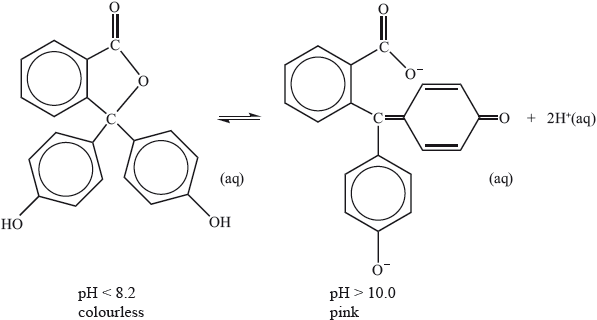
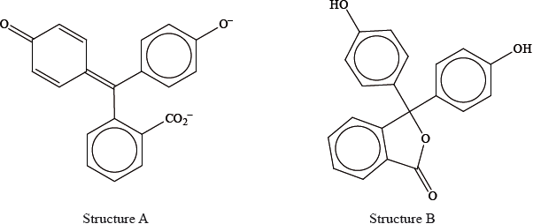
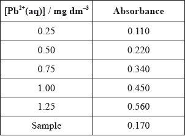

HL Paper 3
When excess ammonia solution is added to a solution of copper(II) sulfate the oxidation number of the copper ion does not change but there is a noticeable colour change. Outline the reasons for this change in colour.
Markscheme
the \({{\text{H}}_{\text{2}}}{\text{O}}\) ligand is exchanged for \({\text{N}}{{\text{H}}_{\text{3}}}\);
Accept suitable equation with co-ordination numbers of 4 and 6.
colour is due to electron transitions between the split d orbitals;
\({\text{N}}{{\text{H}}_{\text{3}}}\) causes a greater/different splitting than \({{\text{H}}_{\text{2}}}{\text{O}}\);
Examiners report
Quite a few candidates referred to electron transition between split d-orbitals, but they generally did not realize that the exchange of the ligand was the reason for the change in colour, and so lost 2 marks.
Transition metal complexes are coloured because electronic transitions occur within split d orbital energy levels. Identify two different factors that affect the colour of complexes of a specific transition metal.
Phenolphthalein indicator is colourless in solutions with a pH less than 8.2 but pink in solutions with a pH greater than 10.0. The molecule dissociates according to the equation:

Explain, in terms of the structures, why the indicator is colourless at \({\text{pH}} < 8.2\) and is pink at \({\text{pH}} > 10.0\).
Markscheme
oxidation state of transition element/number of d electrons/charge on ion;
type/identity/charge density of ligands;
stereochemistry/shape of complex/number of ligands;
molecule colourless because energy absorbed in UV region/not absorbed in visible region;
anion pink because of greater conjugation/more alternating single and double (C=C) bonds;
anion/coloured form/more conjugated form absorbs in visible region/lower energy radiation/green light;
complementary colour seen;
Examiners report
Many scored both marks in (a), although some blanks were seen.
Part (b) was generally well answered, with most showing a good understanding of the material being tested, although a few referred to d-d electron transitions.
Phenolphthalein is colourless at pH 7 but its structure changes at pH 11 and it becomes pink. The structures of the compound at these two pH values are shown below.

Copper(II) sulfate forms a pale blue aqueous solution. When aqueous ammonia is added to this, initially a pale blue precipitate forms; this precipitate then dissolves in excess ammonia to form a deep blue solution. Explain why these solutions are coloured and the colour with excess ammonia is a deeper blue.
Markscheme
electron transitions between (split, partially filled) d orbitals;
absorption depends on energy difference between the split d orbitals;
waters replaced by ammonias;
ammonia (ligands) increase the splitting between the d orbitals/larger energy difference;
absorption moves to shorter wavelength/higher frequency/towards blue end of spectrum;
Examiners report
Part (b) lacked proper understanding of the chemical principles and was poorly answered by most of the candidates.
The complex ion \({{\text{[Ni(}}{{\text{H}}_{\text{2}}}{\text{O}}{{\text{)}}_{\text{6}}}{\text{]}}^{2 + }}\) is green and \({{\text{[Ni(N}}{{\text{H}}_{\text{3}}}{{\text{)}}_{\text{6}}}{\text{]}}^{2 + }}\) is blue. Explain why the \({{\text{[Ni(}}{{\text{H}}_{\text{2}}}{\text{O}}{{\text{)}}_{\text{6}}}{\text{]}}^{2 + }}\) complex ion is coloured and outline why changing the identity of the ligand changes the colour of the ion.
Markscheme
Explanation of colour:
d orbitals splits (into two levels);
due to repulsion between d electrons and non-bonding electrons on ligand / due to interaction with electric field of ligands;
difference in energy between levels corresponds to visible light;
(visible light absorbed as) electrons move from lower to higher energy d orbitals;
colour observed complementary to absorbed;
Why changing ligand changes colour:
more electron-dense ligand greater splitting of d orbitals;
3 NH ligand has greater (crystal field/ligand) splitting energy / NH3 ligand at higher energy in spectrochemical series / OWTTE;
Accept “changing ligand changes d-orbital splitting”.
Examiners report
Surprisingly this was very poorly answered and few students scored all four marks here. There was often no clear understanding of the mechanism of colour absorption (and hence the observed colour being complementary – many candidates thought that the colour was caused by the subsequent emission of energy by electrons falling back). Some of the better candidates did refer to the fact that the ammonia ligand has a greater crystal field/ligand field splitting, which clearly showed comprehensive understanding of this subject.
Waste water from an abandoned copper mine is suspected of polluting a community’s drinking water supply, causing concern that the concentration of dissolved copper compounds might exceed the legal limit of 1.3 ppm.
The concentration of transition metal ions can also be determined by measuring the colour intensity of solutions of their complex ions. In the case of copper(II) ions, excess aqueous ammonia is sometimes added before measuring the absorption.
(i) Describe why adding excess ammonia to aqueous copper(II) ions causes the shade of the blue colour to change.
(ii) State one other factor, apart from a change of ligand, which could affect the colour of a transition metal complex.
Markscheme
(i) ligands cause splitting of d-orbitals;
colour depends on movement of electrons between d-orbitals;
(four of the) water ligands replaced by ammonia;
splitting of orbitals depends on the ligand present;
ammonia ligands increase the splitting of the d-orbitals / cause a greater splitting than water ligands / ammonia higher than water in spectrochemical series;
Accept “Ammonia affects splitting of d-orbitals”.
spectrum moves to the blue end / absorbs a higher frequency/shorter wavelength;
(ii) oxidation state/number of the metal/charge on metal ion/charge density;
Accept “metal ion involved / geometry of the complex ion / coordination number of ligands of metal ion”.
Examiners report
Atomic Absorption was usually correctly identified and good answers were given in (b) when the calibration curve was mentioned. The answers to (c) (i) were rather patchy with few recognizing that there is a replacement of ligands and few mentioning that colour is caused by movement of electrons between d-orbitals. This was not quite the “usual” why are TM complexes coloured? type of question. Most gave a good answer to (c) (ii).
The concentration of transition metal complexes in water can be determined by visible and ultraviolet (UV-Vis) spectroscopy.
Two octahedral chromium complexes are \({{\text{[Cr(}}{{\text{H}}_{\text{2}}}{\text{O}}{{\text{)}}_{\text{6}}}{\text{]}}^{2 + }}\) and \[{{\text{(Cr(N}}{{\text{H}}_{\text{3}}}{{\text{)}}_{\text{6}}}{\text{]}}^{3 + }}\). Describe how the increase in oxidation state from Cr(II) to Cr(III) and the change in ligand from water to ammonia will affect the splitting of the d orbitals and the frequency of the light these complexes absorb.
One of the following organic compounds is colourless while the other is orange.

Predict, with reference to conjugation of double bonds, which compound (anthracene or tetracene) will absorb visible light and, therefore, be coloured.
Markscheme
increase in oxidation state causes greater splitting;
change from \({{\text{H}}_2}{\text{O}}\) to \({\text{N}}{{\text{H}}_3}\) causes greater splitting;
the greater the splitting, the higher the frequency (of absorbed light);
(complexes of) Cr(III) absorb higher-frequency light than (complexes of) Cr(II) /
(complexes with) \({\text{N}}{{\text{H}}_3}\) absorb higher-frequency light than (complexes with) \({{\text{H}}_2}{\text{O}}\);
Allow converse statements and OWTTE throughout.
tetracene and greater number of conjugated (double) bonds/larger delocalized system / OWTTE;
Examiners report
Option A proved to be very popular. Some candidates had difficulty explaining the purpose of the monochromator and some muddled Qualitative and Quantitative, but a reasonable proportion explained the latter. Many students were able to describe the practical method of column chromatography but were not able to explain the process in terms of adsorption, partition and retention. While many candidates knew about ‘d’ orbital splitting some forgot to explain the change in magnitude of the splitting, and a significant few thought that fewer ‘d’ electrons in the \({\text{C}}{{\text{r}}^{3 + }}\) ion would cause less repulsion and so less splitting.
Option A proved to be very popular. Some candidates had difficulty explaining the purpose of the monochromator and some muddled Qualitative and Quantitative, but a reasonable proportion explained the latter. Many students were able to describe the practical method of column chromatography but were not able to explain the process in terms of adsorption, partition and retention. While many candidates knew about ‘d’ orbital splitting some forgot to explain the change in magnitude of the splitting, and a significant few thought that fewer ‘d’ electrons in the \({\text{C}}{{\text{r}}^{3 + }}\) ion would cause less repulsion and so less splitting.
According to recommendations from the World Health Organization (WHO), the maximum allowed concentration of lead(II) cations, \({\text{P}}{{\text{b}}^{2 + }}{\text{(aq)}}\), in drinking water is \({\text{0.001 mg}}\,{\text{d}}{{\text{m}}^{ - 3}}\). The tap water taken from a building was analysed using atomic absorption (AA) spectroscopy to determine the concentration of \({\text{P}}{{\text{b}}^{2 + }}{\text{(aq)}}\). An AA spectrophotometer was calibrated and the following results were obtained.

Although both lead, Pb, and chromium, Cr, are metals, only chromium is classified as a transition metal and forms transition metal complexes, such as \({{\text{[Cr(}}{{\text{H}}_{\text{2}}}{\text{O}}{{\text{)}}_{\text{6}}}{\text{]}}^{3 + }}\).
(i) The energy level diagram showing the electrons in the five 3d orbitals of a chromium atom is represented below. Draw the completed diagram showing the d orbitals in \({{\text{[Cr(}}{{\text{H}}_{\text{2}}}{\text{O}}{{\text{)}}_{\text{6}}}{\text{]}}^{3 + }}\) after splitting.

(ii) State and explain what happens to the splitting of the d orbitals if the ligand is changed from \({{\text{H}}_{\text{2}}}{\text{O}}\) to \({\text{N}}{{\text{H}}_{\text{3}}}\).
Markscheme
(i) 
(ii) increases / greater;
Award [1] for one of the following:
NH3 has greater electron/charge density;
NH3 higher in spectrochemical series;
NH3 stronger base;
Allow converse argument for H2O.
Do not award M2 for stating that NH3 is a stronger ligand or has a smaller size.
If decreases is given for M1, then M2 cannot be scored.
Examiners report
(b) was very poorly answered and even the better candidates often scored zero marks here. In (i), it was very disappointing to see candidates failing to realise that in an octahedral crystal field the 3d sublevel splits into two sets of orbitals, a triply degenerate level which is lower in energy and a doubly degenerate level which is higher in energy. Many candidates put the triply degenerate level (the t2g level) at the same energy as the five-fold degenerate 3d sublevel, thereby clearly misunderstanding the splitting pattern. In addition, it was further very disappointing at HL to see candidates failing to apply Hund's rule of maximum multiplicity and placing two electrons in one orbital and one electron in another orbital. All three orbitals in the t2g level are degenerate and, hence, applying Hund‟s rule the electrons fill them singly first. Likewise in (ii), although some candidates stated that the splitting of the d-orbitals would increase if the ligand changed from water to ammonia, virtually no candidate mentioned a correct reason i.e. the fact that ammonia has greater charge density or is higher in the spectrochemical series. Clearly there were significant weaknesses in candidates‟ understanding of this topic overall.